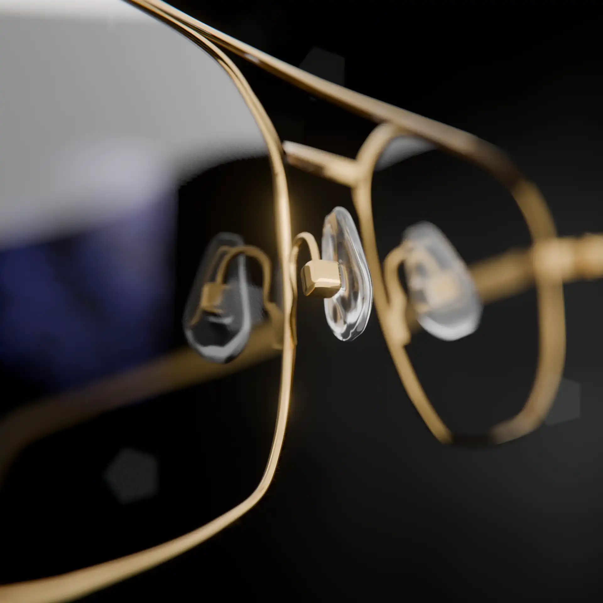
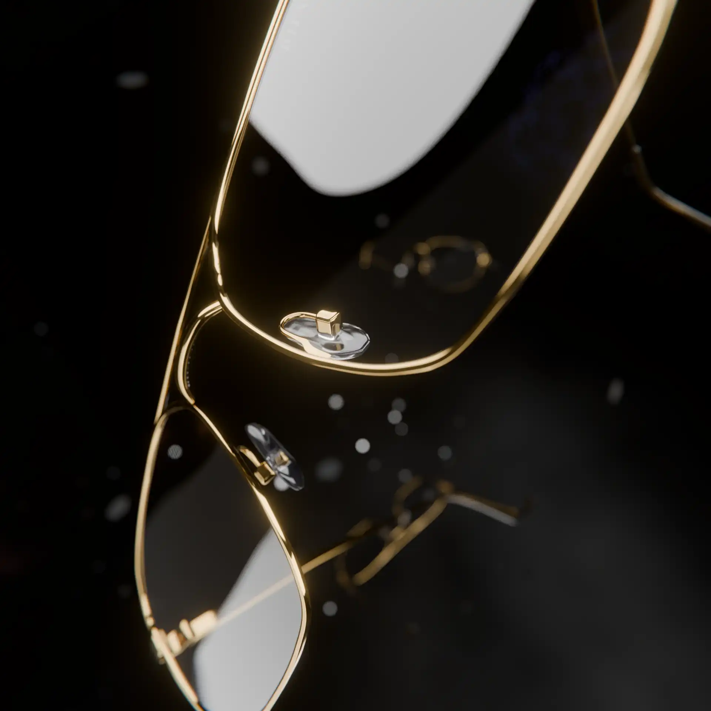
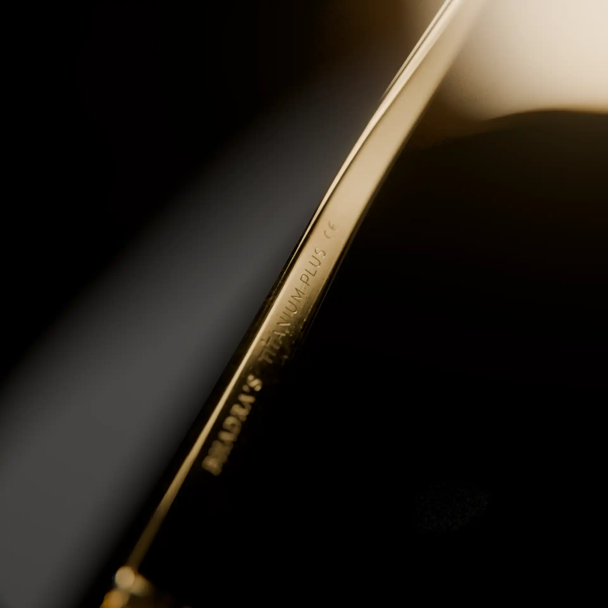

Leveraging advanced physically based rendering (PBR) workflows, this project achieves hyper-realistic representation of gold-plated titanium. Our approach focused on micro-surface detailing and anisotropic shading to accurately simulate material behavior under complex lighting conditions. The result is a tangible digital asset that demonstrates precision in texture mapping and geometric fidelity.